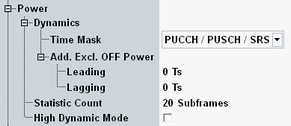
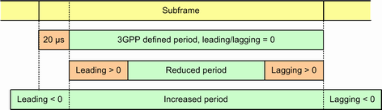

The following "Measurement Control" parameters configure the power measurement settings.

The following parameters configure the power dynamics measurement.
Selects the time mask for power dynamics measurements. The time masks are defined by 3GPP. Each mask is designed for a specific sequence of powers.
"ON" and "OFF" indicate the PUCCH/PUSCH power. "SRS ON" and "SRS OFF" indicate the SRS power.
- General On / Off: OFF - ON - OFF
See 3GPP TS 36.521, section 6.3.4.1 / 6.3.4A.1 - PUCCH / PUSCH / SRS: ON - SRS ON - ON
See 3GPP TS 36.101, figure 6.3.4.4-2 - SRS blanking: ON - SRS OFF - ON
See 3GPP TS 36.101, figure 6.3.4.4-4
See also "Power Dynamics Limits"
Remote command:Shifts the OFF power evaluation periods.
With the default value 0 Ts, the OFF power is measured over the evaluation period defined by 3GPP. The leading value shifts the beginning of the evaluation period, the lagging value shifts the end. Positive values decrease the evaluation period. Negative values increase it.
This setting affects the measurement of PUCCH, PUSCH and SRS OFF powers.
Example, default period is one subframe with 20 µs exclusion at beginning:

Defines the number of measurement intervals per measurement cycle for power measurements. The following result views use this statistic count: power dynamics and power monitor.
For power dynamics results, one measurement interval is completed when the R&S CMW has measured one complete diagram.
For power monitor results, one measurement interval is completed when the number of subframes specified via parameter "Measurement Subframe" has been captured.
Remote command:Enables or disables the high dynamic mode.
The high dynamic mode is suitable for power dynamics measurements involving high ON powers. In that case, the dynamic range of the R&S CMW is eventually not sufficient to measure both the high ON powers and the low OFF powers accurately.
In high dynamic mode, the dynamic range is increased by measuring the results in two shots. One shot uses the configured settings to measure the ON power. The other shot uses a lower "Expected Nominal Power" value to measure the OFF power results.
Disable the high dynamic mode if you do not need it, to optimize the measurement speed. Disable it especially if you are not interested in power dynamics results or if you measure low ON powers using a low "Expected Nominal Power" setting.
While the combined signal path scenario is active, this parameter is only configurable for the measurement mode "Normal", see "Measurement Mode".
Remote command: